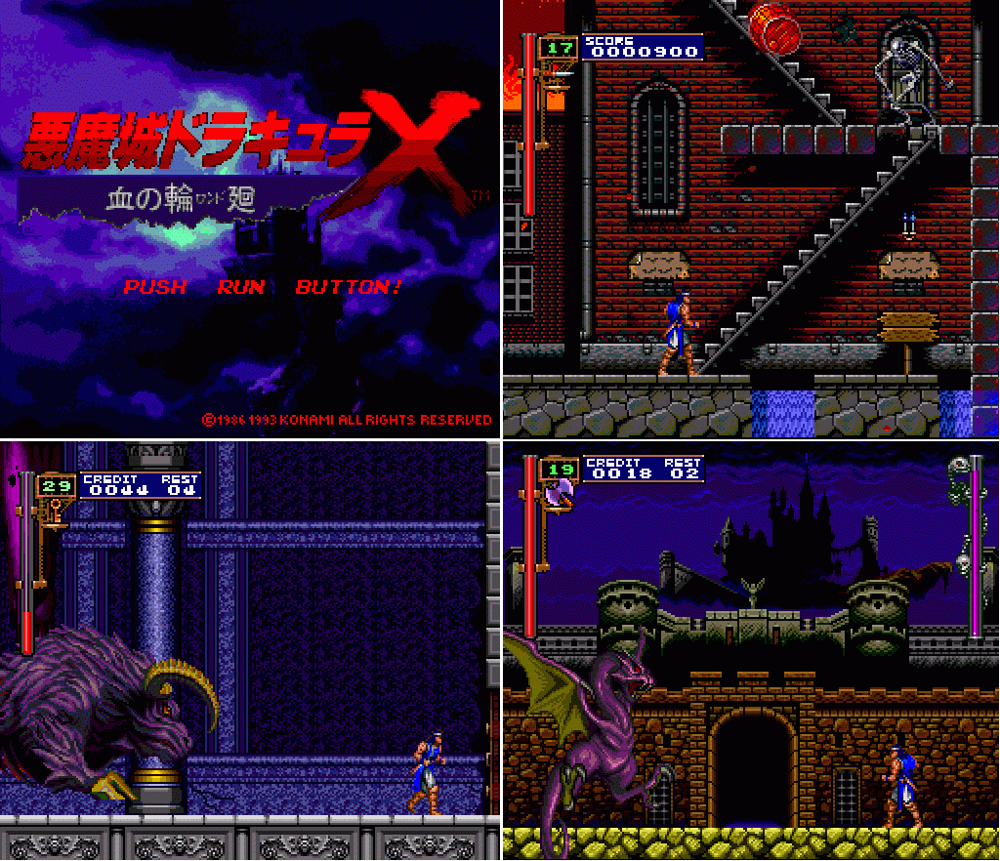
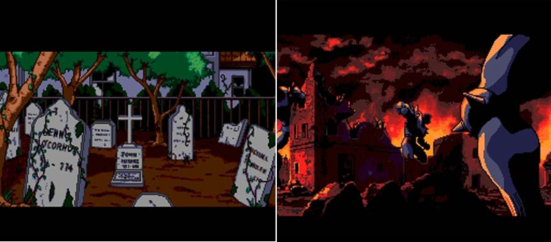
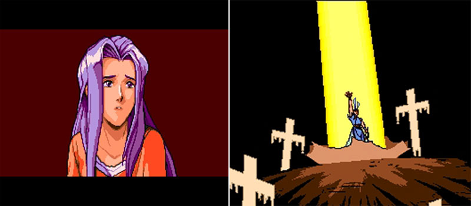
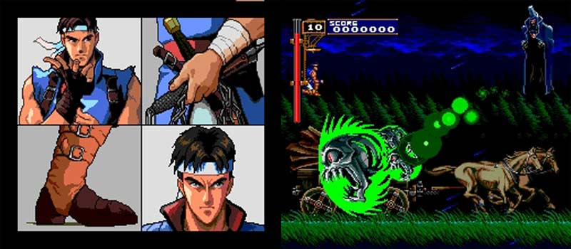
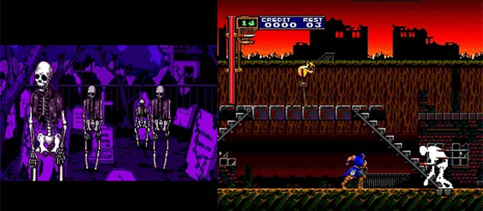

|
Castlevania :
Dracula X : The Rondo of Blood
เกม Castlevania : Dracula X : The Rondo of Blood
++ Game :: Castlevania : Dracula X : The Rondo of Blood
++ เครื่องเล่น :: PC-Engine Super CD-ROM (Turbografx-16)
++ ข้อมูลโดย :: สมาชิกท่านหนึ่งในบอร์ด emulism (ไม่ประสงค์ที่จะออกนามครับผม)
++ E-mail :: -
++ จาก :: emulism board
ภาคนี้ได้มีการรับรองว่ามันมาก สนุกมาก เป็นรองเพียงภาค
Symphony of the Night เท่านั้นเอง
(จริงๆ แค่เห็นภาพก็เข้าใจแล้ว่าน่าสนุกเพียงใด ฮิฮิ)
ส่วนตัวผม ยังไม่มีโอกาสได้ทดลองเล่นเลยครับ เพราะวิธีการเล่นบน Emu
ค่อนข้างวุ่นวาย
* Note : วิธีการเล่นเกมนี้บน Emu ค่อนข้างวุ่นวาย
จึงไม่ขอกล่าวถึงนะครับ
* Note : ภาพต่างๆ ได้รับความเอื้อเฟื้อจากสมาชิกในบอร์ด
Emulism ครับผม
* Note : ส่วนรายละเอียดอื่นๆ ดูได้ที่นี่ http://www.classicgaming.com/castlevania/dracx.htm
ใครอยากดู Title ยั่วน้ำลายดูได้ที่นี่ครับ http://www.classicgaming.com/castlevania/dracxduo-int.htm
น่าดูมากมากเป็นภาพการ์ตูนเคลื่อนไหว
ภาคนี้มี Stage มากถึง 13 Stage เลยทีเดียว
- - - - - - - - - - - - - - - - - - -





|